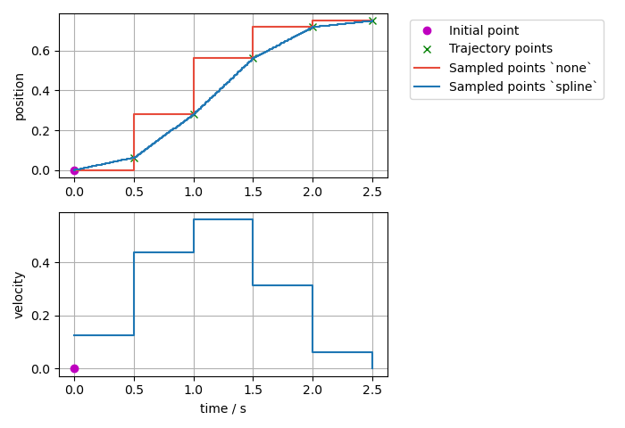
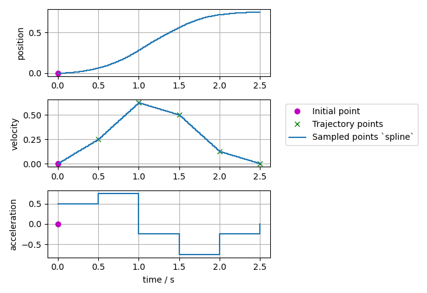
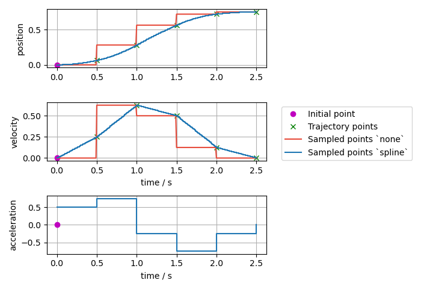
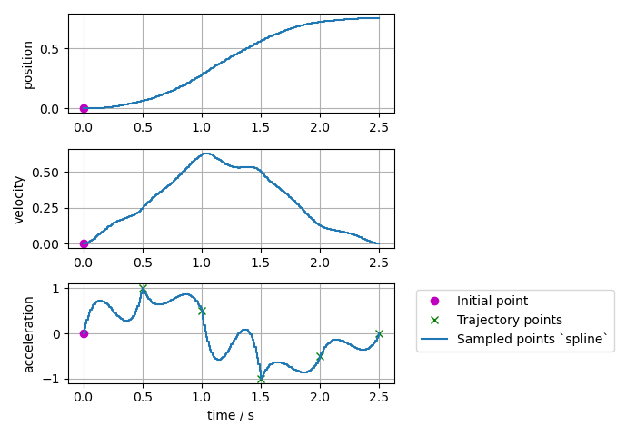
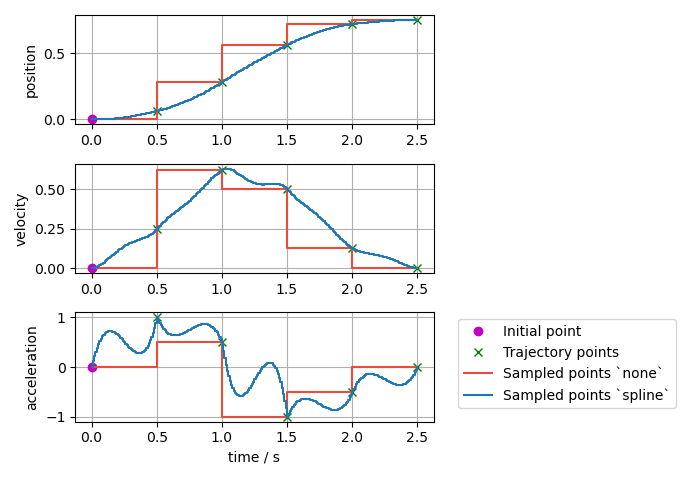
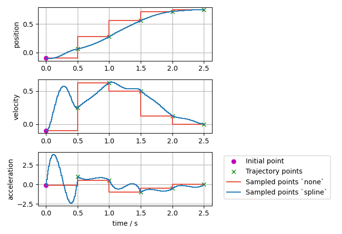
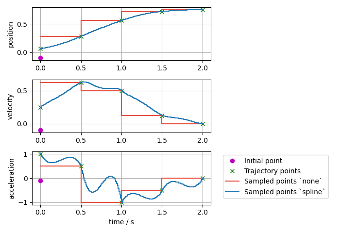
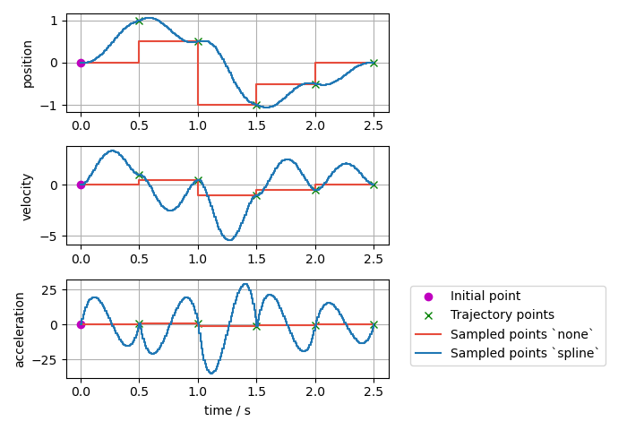

You're reading the documentation for an older, but still supported, version of ROS 2. For information on the latest version, please have a look at Kilted.
Trajectory Representation
Trajectories are represented internally with trajectory_msgs/msg/JointTrajectory data structure.
Currently, two interpolation methods are implemented: none and spline.
By default, a spline interpolator is provided, but it’s possible to support other representations.
Warning
The user has to ensure that the correct inputs are provided for the trajectory, which are needed by the controller’s setup of command interfaces and PID configuration. There is no sanity check and missing fields in the sampled trajectory might cause segmentation faults.
Interpolation Method none
It returns the initial point until the time for the first trajectory data point is reached. Then, it simply takes the next given datapoint.
Warning
It does not deduce (integrate) trajectory from derivatives, nor does it calculate derivatives. I.e., one has to provide position and its derivatives as needed.
Interpolation Method spline
The spline interpolator uses the following interpolation strategies depending on the waypoint specification:
Linear:
Used, if only position is specified.
Returns position and velocity
Guarantees continuity at the position level.
Discouraged because it yields trajectories with discontinuous velocities at the waypoints.
Cubic:
Used, if position and velocity are specified.
Returns position, velocity, and acceleration.
Guarantees continuity at the velocity level.
Quintic:
Used, if position, velocity and acceleration are specified
Returns position, velocity, and acceleration.
Guarantees continuity at the acceleration level.
Trajectories with velocity fields only, velocity and acceleration only, or acceleration fields only can be processed and are accepted, if allow_integration_in_goal_trajectories is true. Position (and velocity) is then integrated from velocity (or acceleration, respectively) by Heun’s method.
Effort trajectories are allowed for controllers that claim the effort command interface and they are treated as feed-forward effort that is added to the position feedback. Effort is handled separately from position, velocity and acceleration. We use linear interpolation for effort when the spline interpolation method is selected.
Visualized Examples
To visualize the difference of the different interpolation methods and their inputs, different trajectories defined at a 0.5s grid and are sampled at a rate of 10ms.
Sampled trajectory with linear spline if position is given only:

Sampled trajectory with cubic splines if velocity is given only (no deduction for interpolation method
none):

Sampled trajectory if position and velocity is given:
Note
If the same integration method was used (Trajectory class uses Heun’s method), then the spline method this gives identical results as above where velocity only was given as input.

Sampled trajectory with quintic splines if acceleration is given only (no deduction for interpolation method
none):

Sampled trajectory if position, velocity, and acceleration points are given:
Note
If the same integration method was used (Trajectory class uses Heun’s method), then the spline method this gives identical results as above where acceleration only was given as input.

Sampled trajectory if the same position, velocity, and acceleration points as above are given, but with a nonzero initial point:

Sampled trajectory if the same position, velocity, and acceleration points as above are given but with the first point starting at
t=0:
Note
If the first point is starting at t=0, there is no interpolation from the initial point to the trajectory.

Sampled trajectory with splines if inconsistent position, velocity, and acceleration points are given:
Note
Interpolation method none only gives the next input points, while the spline interpolation method shows high overshoot to match the given trajectory points.

Trajectory Replacement
Joint trajectory messages allow to specify the time at which a new trajectory should start executing by means of the header timestamp, where zero time (the default) means “start now”.
The current implementation just forgets the old trajectory. Follow this issue for more information.